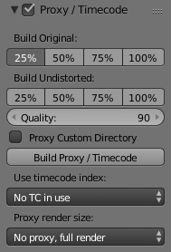

代理/时间码面板¶
一旦你选择了代理/时间码参数，您需要使用 来生成代理剪辑和它后可用于Blender。
代理¶

代理是较小的图像 (更快地装载)，站在主图像。当你为大图像重建代理搅拌器计算小图像 (如缩略图)，可能需要一些时间。经过计算，虽然，编辑功能像洗涤和滚动快得多，但给出了一个低分辨率的结果。请务必禁用代理之前最终渲染。
- 建立原始项
用于定义代理映像的哪些分辨率应构建。
- 建立移除变形项
生成图像不失真原始图像的上方设置的大小。这有助于提供更快的不失真的画面播放。
- 质量
定义用于代理的JPEG图像的质量。
- 代理自定目录
默认情况下，生成的代理的所有图像都存储到
<path of original footage>/BL_proxy/<clip name>文件夹中，但此位置可以通过使用此选项的手设置。- 重建代理
重建代理 此项能够按照上面设定的所有尺寸重新生成代理图像，并重新生成可供随后使用的所有时间码。
- 时间码
见 时间码.
- 代理渲染尺寸
定义哪些代理图像分辨率用于显示。如果 设置 渲染不失真 ，则使用从未失真帧创建的图像。如果没有生成代理，则渲染大小设置为“无代理，完整渲染”，并且渲染未失真已启用，帧失真将自动失真。
时间码¶
当你正在处理从相机直接复制的素材而没有对其进行预处理时，可能会出现大量瑕疵，主要是由于按顺序搜索给定帧。发生这种情况是因为这些素材的标题中通常没有正确的帧速率值。因此，对于Blender来说，计算流中所需帧的位置不正确，可能会导致错误的结果。有两种可能的方法来避免这种情况：
使用例如视频预处理你的视频MEncoder修复文件头并插入正确的关键帧。
在Blender中使用代理/时间码选项。